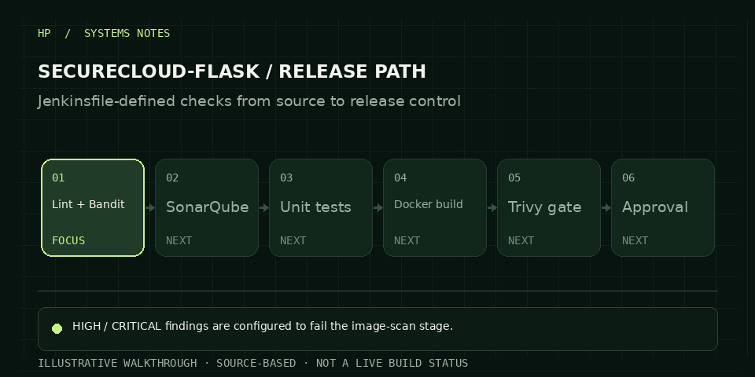

Secure a small API delivery path so code checks and image findings can stop risky builds before a release decision.
01 / CASE STUDYENGINEERING NOTES
SECURECLOUD-FLASK / DEVSECOPS PIPELINE
Security checks before release. Evidence after it.
A Flask application on AWS with a Jenkins-defined delivery workflow, static analysis, unit tests, Docker image scanning and a manual production approval stage.

ANIMATED WALKTHROUGH · ILLUSTRATIVEOCT 2026
Combine flake8, Bandit, SonarQube, pytest, Docker build and Trivy with an explicit exit-code gate.
The committed Jenkinsfile defines the checks and approval stage; image_scan.txt records current scan findings that need remediation.
HOW IT FITS TOGETHER
The system, at a glance.
Architecture diagram based on the design documented in the repository.
JENKINSFILE / SOURCE VIEWOpen source ↗
01CheckoutSCM
02Lint + securityflake8 · Bandit
03SonarQubeanalysis
04Unit testspytest
05Docker buildimage creation
06Trivy scanHIGH / CRITICAL gate
07Stagingplaceholder command
08Integrationoptional tests
09Approvalmanual gate
10Productionplaceholder command
11Health check/health
The README summarizes nine stages; the committed Jenkinsfile contains eleven named stage blocks. Staging and production commands remain placeholders.
STEP THROUGH THE DESIGN
A short technical walkthrough.
Use the steps to inspect the order of decisions and the job each stage does.
CURRENT STEP01 / 06
Checkout source
Jenkins checks out the repository so the pipeline works from the committed source.
ENGINEERING DECISIONS
What matters in this build.
Fail closed on image risk
Trivy uses `--exit-code 1` for HIGH and CRITICAL severities so matching findings stop the stage.
Keep checks traceable
The scanner, test suite and build commands are in the Jenkinsfile, so reviewers can inspect the exact configured steps.
Separate intention from runtime
The next implementation step is to replace the echo placeholders with real deployment commands and connect the integration stage to a maintained test suite.
IMPLEMENTATION NOTES
Current implementation
The README summarizes nine stages; the committed Jenkinsfile contains eleven named stage blocks. The homepage groups them into five workflow checkpoints.
The staging and production stages currently use `echo` placeholders instead of deployment commands. The integration-test stage also allows the test suite to be absent.
The committed `image_scan.txt` contains HIGH-severity findings in OS and Python packages. Trivy is configured to fail on HIGH/CRITICAL findings; OWASP ZAP is not invoked by this Jenkinsfile.
COST NOTE
Cost is driven by uptime and managed services.
No monthly total is advertised because an actual deployment footprint and uptime are not published. A running environment may bill for compute, RDS, load balancing, NAT Gateway, logs, storage and data transfer. Use the calculator for the chosen region, then run `terraform destroy` and stop containers when the demo is done.
Estimate with AWS Pricing Calculator ↗NEXT STEP
Email Hemanth↗